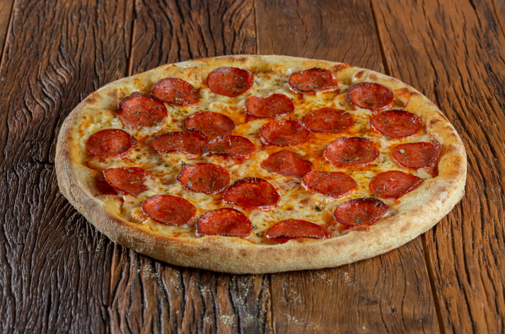

Pepperoni Pizza
Homepage

This is a recipe for pepperoni pizza. The recipe is easy, quick, and delicious. Pepperoni pizza is one of the most popular pizza in the world. Great for the whole family to enjoy.
Ingredients
Pizza Sauce
- 1/2 cup water
- 1/2 can Tomato Paste
- 1 teaspoon crushed dried oregano
- 1 teaspoon crushed dried basil
- 1/2 teaspoon garlic powder
- 1/2 teaspoon onion powder
- 1/2 teaspoon sugar
- 1/2 teaspoon salt
- 1/4 teaspoon black pepper
Pizza Crust
- 3 1/4 cups all-purpose flour
- 2 envelopes of baker's yeast
- 1 tablespoon sugar
- 1 1/2 teaspoon salt
- 1 1/3 cups very warm water
- 1/2 cup oil
Toppings
- 1 cup shredded mozzarella cheese
- 1 package sliced pepperoni
Directions
- Preheat oven to 425 degrees F. Need two 12-inch pizza pans. Grease the two pans.
- Make the sauce using the above ingredients. Set it aside.
- Make crust using above ingredient using large bowl. Mix and blend together until soft and sticky dough forms.
- Flour surface of table. Knead the dough until it is smooth and elastic.
- Divide the dough in half. Add flour to your hands. Add dough onto the pizza pans.
- when dough is in pan top the pizza dough with sauce, pizza, and pepperoni.
- Bake in preheated oven. It's ready when the crusts are brown and cheese is bubbly.
To ensure it's fully cooked rotate the pans between top and bottom racks of the oven.
Do this halfway through baking.